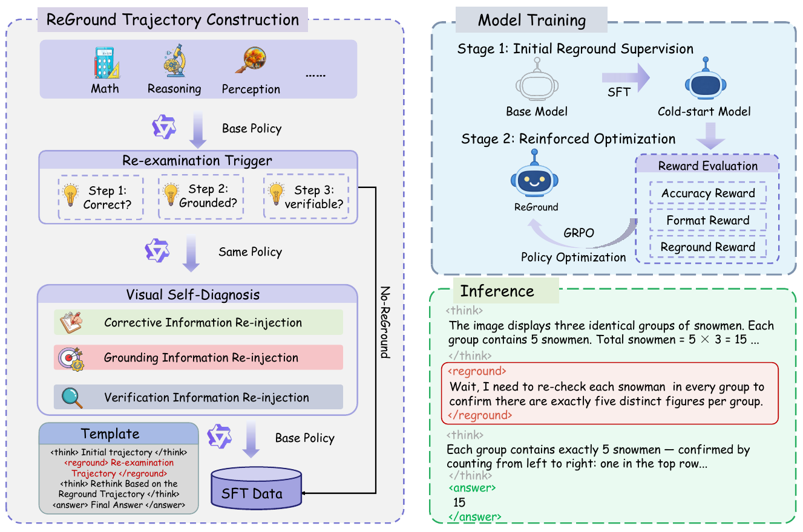
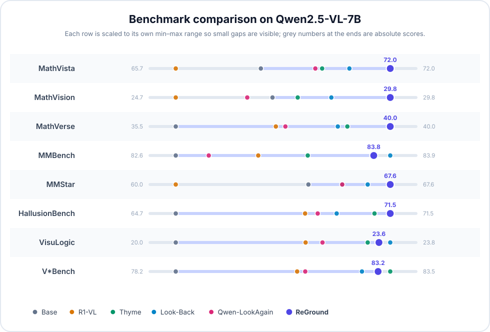

Vision-language models gradually lose visual grounding as reasoning chains grow longer.
ReGround teaches a model to self-diagnose when it needs fresh visual evidence and emit a
<reground> cue, which re-injects the original image so the model can revise its reasoning
before answering — no external tools or architectural changes.
Abstract
Vision-Language Models (VLMs) often lose visual grounding during multi-step reasoning: as reasoning chains grow longer, later inference steps rely increasingly on language priors rather than image evidence. We identify a consistent benchmark-level signature of this degradation: across 2,510 re-examined samples from four benchmarks, attention entropy over image tokens typically decreases during Round 1 and rises again after image re-injection.
However, we find that effective visual re-examination requires two complementary ingredients: fresh image re-injection and targeted self-diagnosis. Without targeted diagnosis, re-examination can even hurt performance, whereas accurate self-diagnosis yields substantial gains — indicating that diagnostic quality is a key factor in whether re-examination helps or hurts.
We present ReGround, a two-stage framework that teaches VLMs to self-diagnose grounding failures and selectively re-examine visual evidence, without architectural modifications or external tools. Through capability bootstrapping, a stronger variant from the same model family provides diagnostic scaffolding only during data construction, while the policy model learns to diagnose autonomously at inference time and retains most of the assisted gains. Experiments on eight benchmarks across two VLM backbones demonstrate consistent gains, especially on visually intensive multi-step reasoning tasks, while incurring only modest inference overhead relative to tool-augmented baselines.
Key Contributions
Grounding decay & recovery
Across 2,510 samples from four benchmarks, image-token attention entropy narrows in 98.0% of cases during reasoning and recovers after image re-injection — a robust benchmark-level phenomenon.
Diagnostic quality is the bottleneck
Re-examination without targeted diagnosis can degrade performance. Via capability bootstrapping, the policy recovers 79–90% of the oracle cue’s gains with no inference-time dependency.
Triggering policy analysis
Over-triggering actively damages accuracy through negative flips on correct answers, whereas under-triggering is safe but wasteful — giving practical guidance for calibrating the trade-off.
A practical, tool-free framework
Consistent gains across eight benchmarks and two VLM backbones, with no external tools or architectural changes — more efficient than tool-augmented baselines in latency and token cost.
Method

<reground> cue before producing the revised answer.
Cold-start SFT
A trajectory construction pipeline routes each sample into Correction, Grounding, Verification, or No-ReGround modes. Trajectories follow the <think> / <reground> / <answer> format and initialize the policy with visual re-examination capability.
GRPO refinement
Group Relative Policy Optimization with an asymmetric reward (self-diagnosis, accuracy, format) calibrates the triggering policy, preventing the over-triggering that our analysis shows actively damages accuracy.
Results

Main results on Qwen2.5-VL-7B
| Method | MathVista | MathVision | MathVerse | MMBench | MMStar | Hallus. | VisuLogic | V*Bench |
|---|---|---|---|---|---|---|---|---|
| Base | 68.2 | 27.0 | 35.5 | 82.6 | 64.7 | 64.7 | 20.0 | 78.2 |
| R1-VL | 65.7 | 24.7 | 37.6 | 83.1 | 60.0 | 68.8 | 22.3 | 81.2 |
| Thyme | 70.0 | 27.6 | 39.1 | 83.4 | 65.9 | 71.0 | 23.4 | 83.5 |
| Look-Back | 70.8 | 28.4 | 38.9 | 83.9 | 66.8 | 69.8 | 23.8 | 82.8 |
| Qwen-LookAgain | 69.8 | 26.4 | 37.8 | 82.8 | 65.9 | 69.2 | 22.6 | 81.4 |
| ReGround | 72.0 | 29.8 | 40.0 | 83.8 | 67.6 | 71.5 | 23.6 | 83.2 |
ReGround attains the best performance on five of eight benchmarks, including all three math-reasoning benchmarks (MathVista +3.8, MathVision +2.8, MathVerse +4.5) and HallusionBench +6.8, while staying within 0.3 points of the strongest baseline on the rest. Gains transfer to Qwen3-VL-8B (+1.1 to +3.4 across all eight benchmarks) without re-tuning.
Efficiency–accuracy trade-off
| Method | Acc. | Total Tokens | Calls | Time |
|---|---|---|---|---|
| Baseline | 61.2 | 1163 (1.00×) | 1.00 | 0.79s (1.00×) |
| Thyme | 64.7 | 1935 (1.66×) | 1.10 | 2.41s (3.05×) |
| ReGround | 66.1 | 1889 (1.62×) | 1.34 | 1.39s (1.76×) |
Sample-count-weighted average over MathVista, MathVision, and HallusionBench (2,255 samples). ReGround is both more accurate and substantially faster than the tool-augmented Thyme baseline.
BibTeX
@inproceedings{peng2026reground,
title = {ReGround: Restoring Visual Grounding in Multi-Step
Reasoning through Self-Diagnosis and Visual Re-Examination},
author = {Peng, Lei and Lv, Shuai and Hu, Wei},
booktitle = {Proceedings of the 34th ACM International Conference
on Multimedia (ACM MM '26)},
year = {2026},
note = {To appear}
}Acknowledgements
This project is built on Qwen2.5-VL, vLLM, and VLMEvalKit. We thank their authors for making their work publicly available.